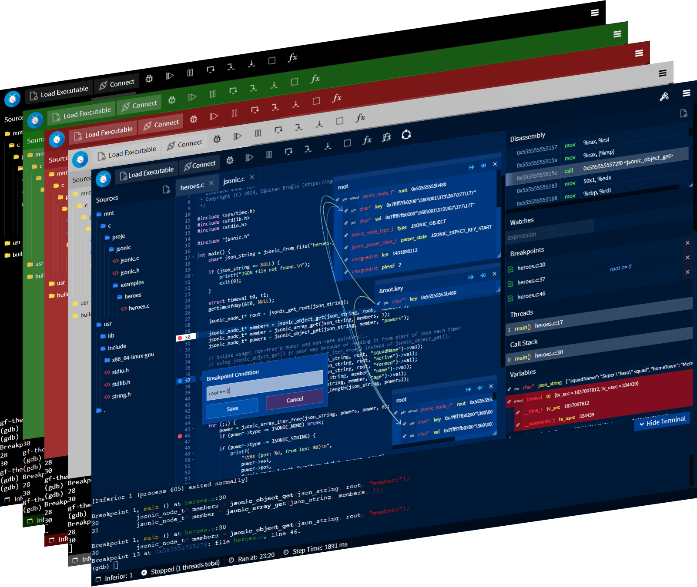
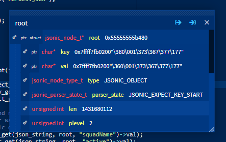
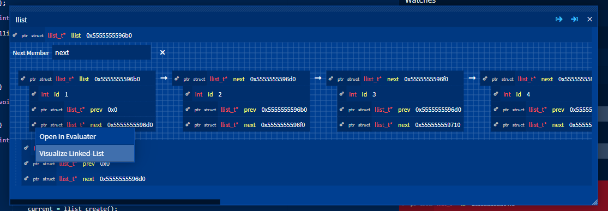
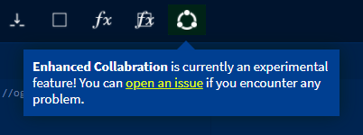
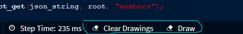

GDBFrontend README


GDBFrontend is an easy, flexible and extensionable gui debugger.

Installing
Requirements
- GDB => 8.2 (with python3)
- python3 => 3.2
- tmux
PIP Package (Python Wheel) [Recommended]
You can install GDBFrontend with pip.
sudo python3 -m pip install gdbfrontend
if it is already installed and you are upgrading
sudo python3 -m pip install --upgrade gdbfrontend
or if you want to install specific GIT snapshot:
sudo python3 setup.py install
and you can run
gdbfrontend
Running From GIT
You can download latest source and run it.
You can run gdb-frontend with following commands:
git clone https://github.com/rohanrhu/gdb-frontend.git gdb-frontend
cd gdb-frontend
./gdbfrontend
and you can open it with:
http://127.0.0.1:5550/terminal/
or without terminal:
http://127.0.0.1:5550/
You can open GDB shell with the command:
tmux a -t gdb-frontend
Arch Linux (AUR)
You can install Arch Linux package for Arch-based distributions. (AUR Package)
yay -S gdb-frontend-bin
and you can run it:
gdbfrontend
Flatpak
Flatpak package is a TODO.
Embedded Debugging with GDBFrontend
Follow this quick tutorial for debugging embedded devices with GDBFrontend.
Python C Extension Debugging with GDBFrontend
Follow this quick tutorial for debugging native C Python extensions with GDBFrontend.
How to develop GDBFrontend plugins?
GDBFrontend has powerful and extensible APIs. Follow this quick tutorial to learn developing GDBFrontend plugins.
Features
Expression Evaluter
GDBFrontend has an expression evaluater that you can use multiple in sametime.

Pointer Visualisation

Linked-List Visualization

Conditional Breakpoints
Right click to a breakpoint for setting its condition.


Connected Expressions
Expressions of all variables, members and items are connected in GDBFrontend's VariablesExplorer.

Process Manager
You can watch, filter or manage processes with Process Manager.

Enhanced Collabration
GDBFrontend has a set of some features for collabration named as "Enhanced Collabration".

Collabration Draw
Collabration draw is available when you enable Enhanced Collabration. Click to Draw or use Ctrl + Shift + X shortcut to draw and Ctrl + Shift + C to clear all drawings.

Synced Source Viewing
With Enhanced Collabration all debugger clients are synchronized on source viewing.
Expression hover popup variable explorer

Extensibility
GDBFrontend is very extensible and has powerful APIs. Some examples of GDBFrontend's extensibility.


./gdbfrontend
$ gdbfrontend --help
GDBFrontend is a easy, flexible and extensionable gui debugger.
Options:
--help, -h: Shows this help message.
--version, -v: Shows version.
--gdb-args="ARGS", -G "ARGS": Specifies GDB command line arguments. (Optional)
--gdb-executable=PATH, -g PATH: Specifies GDB executable path (Default is "gdb" command on PATH environment variable.)
--tmux-executable=PATH, -tmux PATH: Specifies Tmux executable path (Default is "tmux" command on PATH environment variable.)
--terminal-id=NAME, -t NAME: Specifies tmux terminal identifier name (Default is "gdb-frontend".)
--credentials=USER:PASS, -c USER:PASS: Specifies username and password for accessing to debugger.
--host=IP, -H IP: Specifies current host address that you can access via for HTTP and WS servers.
--listen=IP, -l IP: Specifies listen address for HTTP and WS servers.
--port=PORT, -p PORT: Specifies HTTP port. (0 for random port.)
--readonly, -r: Makes code editor readonly. (Notice: This option is not related to security.)
--workdir, -w: Specifies working directory.
--plugin-dir, -P: Specifies plugins directory.
--dontopenuionstartup, -D: Avoids opening UI just after startup.
--verbose, -V: Enables verbose output.
Options
--help, -h
Shows help text.
--version, -v
Shows version.
--gdb-args="ARGS", -G "ARGS"
Specifies GDB command line arguments. (Optional)
--gdb-executable=PATH, -g PATH
You can specify GDB executable path like gdbfrontend --gdb-executable=/path/to/gdb. (Optional)
--tmux-executable=PATH, -tmux PATH
You can specify Tmux executable path like gdbfrontend --tmux-executable=/path/to/tmux. (Optional)
--terminal-id=PATH, -t PATH
You can specify Tmux terminal id like gdbfrontend --terminal-id=terminal-name. (Default: gdb-frontend)
--credentials=USER:PASS, -c USER:PASS
Specifies username and password for accessing to debugger.
--host=IP, -H IP
Specifies current host address that you can access via for HTTP and WS servers.
--listen=IP, -l IP
Specifies listen address for HTTP and WS servers.
--port=PORT, -p PORT
Specifies HTTP port. (0 for random port.)
--readonly, -r
Makes code editor readonly. (Notice: This option is not related to security.)
--workdir, -w
Specifies working directory.
--plugin-dir, -P
Specifies plugins directory.
--dontopenuionstartup, -D
Avoids opening UI just after startup.
--verbose, -V
Enables verbose output.
GDB Commands
GDBFrontend's GDB commands starts with gf-.
gf-refresh
Refreshes all browser clients.
gf-theme [theme-name]
Switch to desired theme. For example: gf-theme light, gf-theme red or gf-theme default for default theme.
gf-list-plugins
Lists all GDBFrontend plugins in the plugin directory.
gf-load-plugin [plugin-name]
Loads GDBFrontend plugin.
gf-unload-plugin [plugin-name]
Unloads GDBFrontend plugin.
Shortcuts / Hotkeys
Current hotkeys are listed below.
| Action | Hotkey | Context |
|---|---|---|
| General: Open a source file | Ctrl + O | GDBFrontend |
| General: New ExpressionEvaluater | Ctrl + R | GDBFrontend |
| General: New ExpressionEvaluter on native window | Ctrl + Shift + R | GDBFrontend |
| General: Fuzzy source finder | Ctrl + P | GDBFrontend |
| Runtime: Run | F5 | GDBFrontend |
| Runtime: Continue | F6 | GDBFrontend |
| Runtime: Pause/Interrupt | F7 | GDBFrontend |
| Runtime: Step Over | F8 | GDBFrontend |
| Runtime: Step Into | F9 | GDBFrontend |
| Runtime: Step Instruction | F10 | GDBFrontend |
| Runtime: Stop | F11 | GDBFrontend |
| Enhanced Collabration: Toggle drawing mode | Ctrl + Shift + X | GDBFrontend / Enhanced Collabration: Enabled |
| Enhanced Collabration: Clear all drawings | Ctrl + Shift + C | GDBFrontend / Enhanced Collabration: Enabled |
Themes
GDBFrontend has built-in themes.
For switching between themes use gf-theme [THEME] command on GDB shell.
(gdb) gf-theme doki
(gdb) gf-theme sky
(gdb) gf-theme cyberpunk
(gdb) gf-theme dark
(gdb) gf-theme green
(gdb) gf-theme light
(gdb) gf-theme red
For switching back to the default theme.
(gdb) gf-theme
Also you may want to look to Plugin Development Tutorial.
GDBFrontend Python API
You can access GDBFrontend's Python API via gdbfrontend module.
(gdb) python-interactive
>>> dir(gdbfrontend)
For example, you can get all client sockets like this:
>>> gdbfrontend.api.globalvars.httpServer.ws_clients
{1: <server.GDBFrontendSocket object at 0x...>}
or you can get all plugins:
>>> gdbfrontend.plugin.getAll()
['hello', 'theme_light', 'theme_red']
Security with Sharing Sessions
You can use --credentials=USER:PASS option for adding HTTP authentication to your debugger session.
Browser Compatibility
GDBFrontend is mainly developing with testing on Chromium-based browsers. It will work properly with other browsers especially with Firefox but if you face some problems on other browsers, you can send a bug-report.
Troubleshooting
Blocking GDB shell/main-thread
Most of GDBFrontend functions are thread-safe and work on GDB's main-thread. So, if you run something that is blocking on the GDB shell, GDBFrontend functions have to wait it until finish.
You will get this warning when a thread-safe GDBFrontend function needs to work and you are blocking GDB's main thread.
(gdb) shell
$ ...

When you exit shell, blocking GDBFrontend functions will continue working.
Note: Sometimes you may get this warning without running anything in GDB shell, it means something (in GDB's event-loop) is taking a long time; in this case just ignore this warning.
Zombie Processes
GDBFrontend sends SIGTERM to its sub-processes, your application and its sub-processes. If your application is forking new processes and setting their PGIDs, GDBFrontend may not close them. In this case you should send SIGKILL to your processes.
pkill -f gdb
Expression Evaluater Performance Tips
If you are using ExpressionEvaluater with very long depth expanded variables/members, your scroll and evaluater window move performance may be affected bad for pointer visualization. In this situation, you can turn off signal and slot pointings for that evaluater window.

GDB-Related Issues and Tips
- GDB may not give sources of dynamic linked object until stepping a line that calls a function from the dynamic linked object once. You can add break point a line and step it once, then you will see sources from dynamic linked object hereafter during the session.
Windows
In fact, gdb-frontend is able to run on Windows but there are some serious issues in the GDB's Windows version those avoid using gdb-frontend on Windows. Of course you can use gdb-frontend on WSL if you are using Windows 10.
Issues about Windows-GDB
- GDB's main-thread is being blocked during running process. (gdb-frontend has an interrupting mechanism to fixing this but it is not enough yet.)
- Windows-GDB's prompt is being blocked during running process and there are some issues about interrupting the application.
WSL
You can use gdb-frontend on WSL (Windows Subsystem for Linux).
Issues about WSL
- On WSL 1, Random port option is not usable on WSL becasue
/proc/net/tcpinterface is not working on WSL. (WSL 2 does not has this problem.)
Versioning
Since v0.2.0-beta, GDBFrontend switched to a new versioning strategy.
Reading Versions
In vX.Y.Z-STABILITY:
Xismajor versions, changes long term with major features and enhancements.Yismain versions that include new features and enhancements.Zisbugfix releases of main versions.STABILITYis stability level of the release. (alpha,beta,rcN,stable)
Documentation
Documentation is TODO yet.
API Documentation
API Documentation is TODO yet.
Plugin Development
You can read the Plugin Development Tutorial.
Theme Development
Themes are developed as plugins.
Discord
Join to Discord community.

🎊 Contributing
You can contribute with commiting to project or developing a plugin. All commits are welcome.
❤️ Donate
Patreon

Bitcoin
You can donate to support the project.
| QR Code | Bitcoin address for donations |
|---|---|
 |
3KBtYfaAT42uVFd6D2XFRDTAoErLz73vpL |
License
Copyright (C) 2019, Oğuzhan Eroğlu rohanrhu2@gmail.com (https://oguzhaneroglu.com/)
GNU General Public License v3 (GPL-3)
You may copy, distribute and modify the software as long as you track changes/dates in source files. Any modifications to or software including (via compiler) GPL-licensed code must also be made available under the GPL along with build & install instructions.